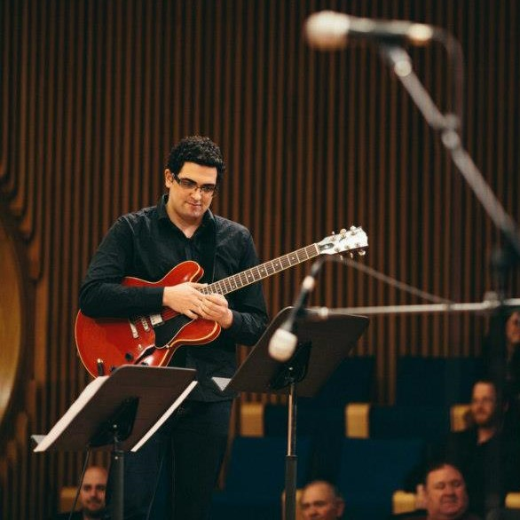

Musician, Tech Enthusiast and Web Developer in the making
Ever since I remember my self ive been around computers and passionate
about technology.
back when the top of the line was 486 computers... 😅

Since then ive been through a lot, studied music and worked in that
area until my early 30's.
then spent another few years in the academy studying engineering (data
science and then civil engineering - one year each) in the Technion.
haven't finished it but learned a lot and really expend my mind about
math physics and tech.
i finally ended up doing P.E in civil engineering but for the
wrong reasons.
now after all that have I decided to leave it all behind and go the
kind of career I really want to (and was afraid to go for)
over the last months im getting all around with self learning courses
(on platforms such as LinkedIn learning and Udemy) both on
Web Development topics and
Data Analytics and feel very happy to start this
bootcamp and do it all ion a more organized way, with a group of
people having the same target.